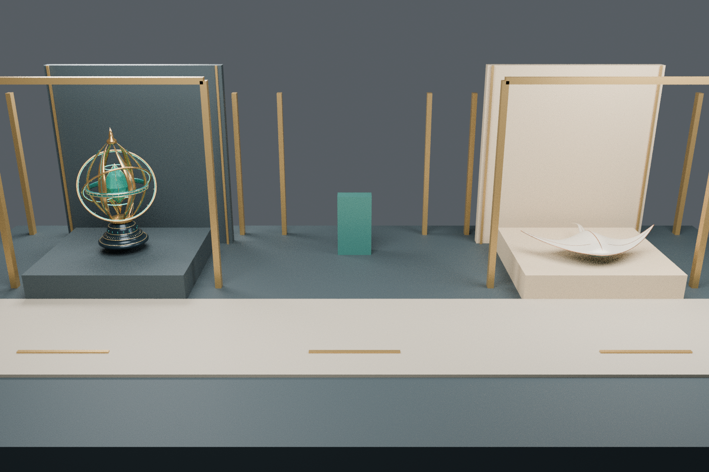
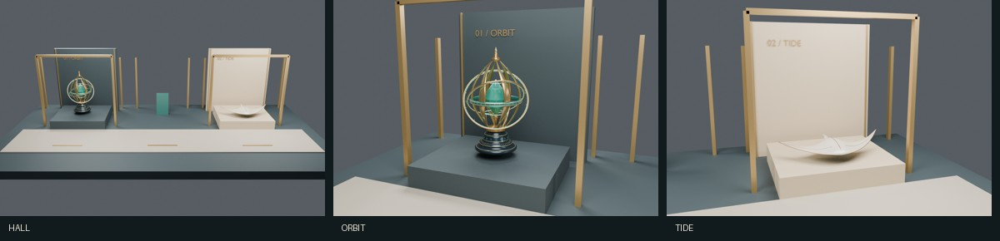

F01 · 轨与翼：初版 → 复查版
设计任务
让 001 星轨与 002 潮翼组成真实空间目录。序厅在中央，星轨位于世界 X=-7，潮翼位于 X=7；相机目的地、DOM 章名、URL hash 和内容锚点一一对应。三维是可选增强，不是阅读门槛。
初版暴露的问题与修订
1. 首张真实序厅渲染裁掉两侧框架，原移动端 CSS 又用正方形裁剪，容易丢失展品。保存 assets/hall-before.png 后，将相机后退至 Z=24，并让手机保留 3:2 视窗。最终 assets/hall.png 能看到两侧完整门户。这里相机是故意改变的，不是同相机材质 A/B。
2. 初版仅有网页章名，场景自身缺少信息标识。对照作者原站的空间／目录关系后，给两座展墙增加独立三维文字 01 / ORBIT、02 / TIDE；不是把参照图片贴进场景。
3. 源码评审发现 #reading 历史项会误重置序厅。阅读导航现在将当前章节写入 history state，后退会恢复对应章节；非章节 hash 不强制重置。
4. 章名变化原本没有读屏通知，补充简短 aria-live。减少动态偏好原本只初次读取，现监听偏好变化并立即结束过渡。
5. 字体转网格后发现 8 个零面积导出三角面，清理文字网格后复测；未改原始 001／002 模型。
6. 总览集成的实际 1188×761 浏览器评审发现：初版标题区加大图将目的地导航挤出首屏。已把导航前置，压紧标题区，桌面按视口限制展示区高度并用 contain 保留整幅真实投影；正文继续自然滚动，不固定裁切页面。
尚有不足
- 展厅目前是节制的两翼展台，不是完整建筑或复杂沉浸式叙事；空间过渡的节奏还需在真 WebGL 环境目视验证。
- 采用固定相机目的地而非自由漫游，避免驾驶门槛；这也减少了探索自由度，是有意的取舍。
- 离线光照来自 Blender Cycles，实时使用 Three.js 半球与方向光；几何和相机对应，材质／阴影并非像素等价。
- 001 晶核遮挡、002 尾根嵌接是原作品已公开的限制，本轮没有假装修完。
- 实时 GPU、帧率、真实手机、读屏语音、动态闪烁未验，不以静态图或数学测试代替。
复盘
先让三维承担明确的信息任务，再增加表现力。下一次应先验证一条“进入→定位→理解→返回”的完整路径，而不是先堆场景细节。几何文字也会产生退化面，不能因为是 Blender 内置字形就跳过导出检查。
实际渲染前后
初版相机过近与修订后的序厅全景；两图相机不同，比较取景，不比较材质。


三章真实相机视图
